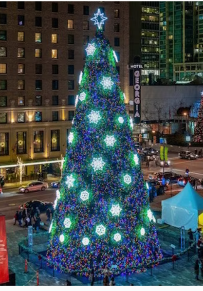

EXPERIENCIAS DE LUZ
12 de octubre de 2026
El gran encendido
Tres árboles.
Tres formas de encender la Navidad.
Árboles de 12 m, visualización envolvente y tres shows instrumentales independientes con más energía, builds, drops y fanfarrias.
01 · Diseños para comparar
△
Píxel 360°
64 líneas verticales, 150 nodos por línea y estrella de 96 píxeles. Barridos, espirales y gráficos de color sobre un cono interior opaco.
 OPCIÓN 2 · REFERENCIA DEL USUARIO
OPCIÓN 2 · REFERENCIA DEL USUARIOEspiral de luz
Cinta helicoidal de 12 vueltas, con malla luminosa y bordes RGB independientes. Un cono interior sólido oculta las luces del lado opuesto.

OPCIÓN 3 · REFERENCIA DEL USUARIOBosque de Navidad
Fondo multicolor y 40 copos de luz. Modelo de 7.680 nodos de fondo, 1.920 en copos y 96 en la estrella.
Altura total 12 m: superficie cónica de 10,9 m y estrella de 1,1 m. Base Ø 7,5 m. Cada modelo usa 9.696 nodos para la comparación digital; el diseño de fabricación de mallas, copos, estructura y anclajes se determina según sede. Las fotos son referencias aportadas por el usuario, no instalaciones ejecutadas por este proyecto.
02 · Tres pistas independientes
| Pista | BPM | Duración | Golpe de encendido |
|---|---|---|---|
| Jingle Bells · Encendido | 144 | 02:00 | 13.333 s |
| Deck the Halls · Fiesta | 160 | 01:48 | 12.000 s |
| Carol of the Bells · Épico | 168 | 01:43 | 11.429 s |
Cada archivo musical comienza en 00:00. No es un medley: se elige, reproduce, repite y descarga cada pista por separado. Incluye bombo dance, clap, cascabeles, bajo, arpegios, cuerdas y metales sintetizados. La entrada prepara el encendido durante ocho compases; una cuenta visual aparece en los últimos tres segundos. En el primer drop, el árbol se ilumina con un golpe blanco y abre la celebración.
18 escenas por canción. Las tres pistas pueden reproducirse con cualquiera de los modelos. El reloj de audio dirige las luces y conserva la sincronía al pausar o avanzar. Jingle Bells: campanas, caramelos y regalos. Deck the Halls: guirnaldas, rombos, cintas y celebración multicolor. Carol of the Bells: auroras, columnas, cristales y meteoros. Los bordes de la espiral siguen una animación y paleta independientes.
03 · Archivos y control
Web con tres diseños, tres MP3 independientes, tres másteres WAV, metadata de escenas, tres geometrías JSON, tres patches CSV/JSON, scripts reproducibles y seis FSEQ para las opciones 1 y 2. El ZIP completo incluye todos; en el ZIP web, WAV y FSEQ se descargan por separado para mantener una descarga ligera. El exportador permite generar otras combinaciones de pista y diseño.
| Universos Art-Net | 65, base 0: 0–64 |
| Canales RGB | 29.088 |
| Salidas | 64 bloques × 150 nodos + estrella × 96 |
| Longitud por universo | 450 canales; estrella 288 |
| Reproducción FSEQ | V2 / zlib, 40 fps (25 ms) |
| Red propuesta | 10.10.10.0/24 · PC .10 · controladores .101–.109 |
| Potencia de cálculo | 5.817,6 W, supuesto 0,60 W/nodo |
| Fuentes previstas | 16 × 600 W, 12 V |
FSEQ: brillo 50 %; el visor usa 85 % como decisión gráfica. Carol of the Bells requiere 4.115 cuadros: 102,875 s, menos de un cuadro más que el audio de 102,857 s. El último cuadro se exporta negro. Los canales del archivo son contiguos y se asignan según el patch; no reservar 512 canales por universo en el FSEQ. Copiar cada MP3 al reproductor con el nombre indicado en el FSEQ.
Los bloques de las opciones 2 y 3 siguen el orden de la geometría digital: definir y comprobar su correspondencia con el cableado real antes de una instalación. El navegador no transmite Art-Net. La estructura requiere cálculo de cargas y viento. La distribución eléctrica necesita validar consumo del lote, inyección, protección individual de ramales y sección de cable. No unir positivos de fuentes distintas.
04 · Presupuesto de planificación
Base referencial de la opción 1. Las opciones 2 y 3 requieren ajustar estructura, malla y fabricación de copos. Los importes son estimaciones internas, no cotizaciones verificadas de proveedores.
| Concepto | Importe |
|---|---|
| Estructura modular, mástil y base | S/ 23,500.00 |
| Nodos RGB 12 V + repuestos (5 %) | S/ 26,470.60 |
| Control y red de datos | S/ 7,200.00 |
| Fuentes, gabinetes y distribución | S/ 11,800.00 |
| Audio de exterior y reproducción | S/ 5,200.00 |
| Diseño y programación del show | S/ 4,800.00 |
| Montaje, desmontaje y pruebas | S/ 9,600.00 |
| Logística y transporte local | S/ 4,200.00 |
| Reserva · 10 % | S/ 9,277.06 |
| IGV de referencia · 18 % | S/ 18,368.58 |
Incluye 5 % de repuestos, control, audio, montaje y logística. No incluye obra civil, acometida de sede, alquiler del espacio ni permisos. Revisar con ubicación, cálculo estructural, marcas, cotizaciones y plazo final. Referencia tributaria: SUNAT.
05 · Escenas de cada pista
Jingle Bells · Encendido
| Tiempo | Escena | Efecto |
|---|---|---|
| 00:00–00:13 | Campanas a lo lejos · preparación | intro |
| 00:13–00:14 | ¡Jingle Bells! · encendido | burst |
| 00:14–00:20 | Bastones de caramelo · primera fiesta | candyChase |
| 00:20–00:27 | Campanas que rebotan | bellBounce |
| 00:27–00:33 | Paseo en trineo | sleigh |
| 00:33–00:40 | Regalos bajo el árbol | giftBoxes |
| 00:40–00:47 | Rueda de menta | peppermint |
| 00:47–00:53 | Repique de campanas | bellPeal |
| 00:53–01:00 | Nieve del camino · respiro | snow |
| 01:00–01:07 | Llegan los cascabeles · subida | bellBounce |
| 01:07–01:13 | Confeti de Navidad · segundo drop | confetti |
| 01:13–01:20 | El trineo acelera | sleigh |
| 01:20–01:27 | Regalos que se abren | giftBoxes |
| 01:27–01:33 | Caramelos en espiral | candyChase |
| 01:33–01:40 | Una campana dorada | bellPeal |
| 01:40–01:47 | La última vuelta de menta | peppermint |
| 01:47–01:53 | Gran fiesta rojiblanca | jingleFinale |
| 01:53–02:00 | Campanada final LIGHTMAN | jingleFinale |
Deck the Halls · Fiesta
| Tiempo | Escena | Efecto |
|---|---|---|
| 00:00–00:12 | Las guirnaldas despiertan · preparación | intro |
| 00:12–00:12 | ¡Deck the Halls! · encendido | burst |
| 00:12–00:18 | Guirnaldas de gala | garland |
| 00:18–00:24 | Cintas que se entrelazan | weave |
| 00:24–00:30 | Baile de abanicos | fanDance |
| 00:30–00:36 | Rombos sobre el árbol | diamonds |
| 00:36–00:42 | Carrusel de celebración | carousel |
| 00:42–00:48 | Olas de fiesta | partyWaves |
| 00:48–00:54 | El salón respira · puente | garland |
| 00:54–01:00 | El lazo se cierra · subida | weave |
| 01:00–01:06 | Carnaval de luces · segundo drop | rainbowChase |
| 01:06–01:12 | Abanicos de la gran fiesta | fanDance |
| 01:12–01:18 | Rombos y diamantes | diamonds |
| 01:18–01:24 | Carrusel verde y rojo | carousel |
| 01:24–01:30 | Olas en el jardín | partyWaves |
| 01:30–01:36 | Guirnalda de despedida | garland |
| 01:36–01:42 | La plaza se viste de color | deckFinale |
| 01:42–01:48 | Final de gala LIGHTMAN | deckFinale |
Carol of the Bells · Épico
| Tiempo | Escena | Efecto |
|---|---|---|
| 00:00–00:11 | Silencio en la catedral · preparación | intro |
| 00:11–00:12 | ¡Carol of the Bells! · encendido | burst |
| 00:12–00:17 | Órgano de luz | cathedral |
| 00:17–00:23 | Aurora sobre la plaza | aurora |
| 00:23–00:29 | El vórtice despierta | vortex |
| 00:29–00:34 | Lluvia de meteoros | meteorStorm |
| 00:34–00:40 | Cristales de invierno | iceCrystal |
| 00:40–00:46 | Pulso del gran órgano | organPulse |
| 00:46–00:51 | La aurora contiene el aire · puente | aurora |
| 00:51–00:57 | El vórtice se concentra · subida | vortex |
| 00:57–01:03 | Supernova · segundo drop | nova |
| 01:03–01:09 | Meteoros sobre la catedral | meteorStorm |
| 01:09–01:14 | Cristal azul y oro | iceCrystal |
| 01:14–01:20 | Columnas del cielo | cathedral |
| 01:20–01:26 | La última aurora | aurora |
| 01:26–01:31 | El órgano llama al final | organPulse |
| 01:31–01:37 | El cielo se abre | carolFinale |
| 01:37–01:43 | Apoteosis azul y dorada LIGHTMAN | carolFinale |
06 · Montaje y validación
Plan referencial 4–6 semanas desde aprobación de sede y diseño. Antes del encendido público: validar estructura y anclajes, numeración de píxeles y RGB, tensión en extremos a carga prevista, protecciones, temperaturas y un ensayo completo con audio y FSEQ emparejados. Ajustar brillo y sonido según la sede. La verificación digital no sustituye la prueba del sistema físico.
07 · Créditos
- Jingle Bells / The One Horse Open Sleigh: James Lord Pierpont, 1857. Nuevo arreglo electro-orquestal instrumental y nueva síntesis para LIGHTMAN; sin samples ni grabaciones de terceros.
- Deck the Halls / Nos Galan: Melodía tradicional galesa; referencia histórica de Welsh Melodies, volumen 2 (1862). Armonización, arreglo dance e instrumentos sintetizados nuevos para LIGHTMAN.
- Shchedryk — motivo instrumental: Motivo tradicional ucraniano asociado a Mykola Leontovych; manuscrito y estreno de 1916. Nueva transformación instrumental electro-orquestal en 4/4 para LIGHTMAN. Sin letra inglesa, voces ni grabaciones modernas.
- Formato FSEQ oficial de FalconChristmas / FPP
- Referencia de fuente Mean Well LRS-600
- Distribución de energía: Advatek

Audio sintetizado desde cero, sin grabaciones comerciales, samples ni voces de terceros. Carol of the Bells utiliza el motivo instrumental de Shchedryk, sin la letra inglesa moderna. Motor Three.js MIT; referencias fotográficas aportadas por el usuario.